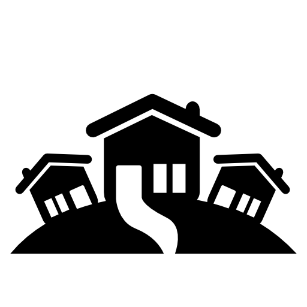
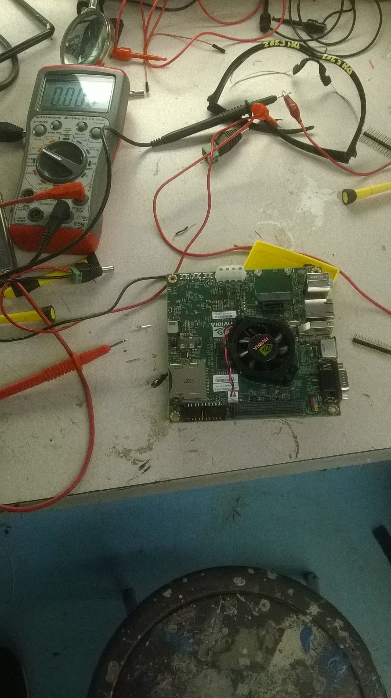
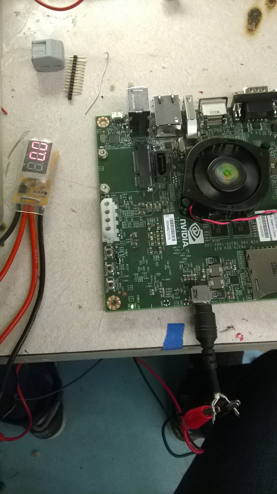

April 18th Check Point
Work Done
So I far I have not been able to do much work with the board since I recieved the board thursday April 17th. However in the mean time I read and received several architeture articles.
I have only setup a simple circuit where I'm measuring the current with a simple probe however the target is for the current measuring circuit to be done by the weekend.
Goals
I'm still on track to produce all of my deliverables however a lot my progress depends on how long it takes to setup the current sensing circuit. In addition I have not yet found standard graphics test harnesses and the papers that I have read so far actually implement it themselves.
Parallelism Competition
For the parallelism competition I plan to demo my power measuring station with an example that stresses the Tegra K1 board. In addition I will have several graphs of previous data that I would have recorded.
Concerns
The issues that concern me that most are my current sensor setup and its accuracy as well as the test harness that I need to develop. Also I'm concerned about how revelant my results will be since the board runs linux while actual deployment phones will be running andriod.
Simple Setup Needs Serious Improvement

